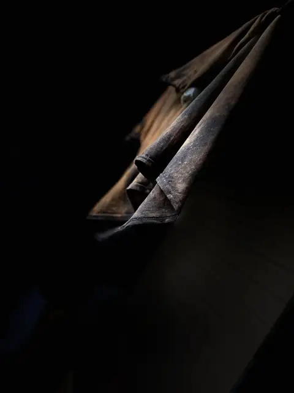

about

bio
Cinematographer + Artist + Spatial Designer
bio coming · [Gill writes] (they/them)
contact
the poem
I am GillI am JamesI am an artista Cree voice risingweaving sound into the unseenIndigenous kin, my culture’s pulsevisual artsFine art and musicare rivers I swim, a daily drifta lifelong humArtistry a starfield I chaseAll my relations,in all my creationstheir breath in every chord I make and everythingI create.ᑕᐣᓯ